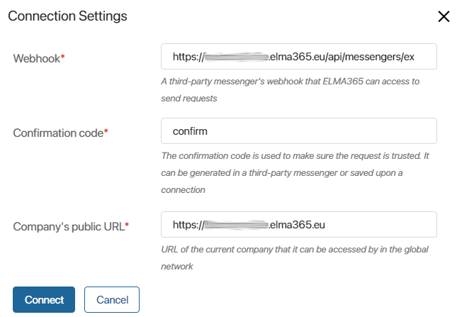
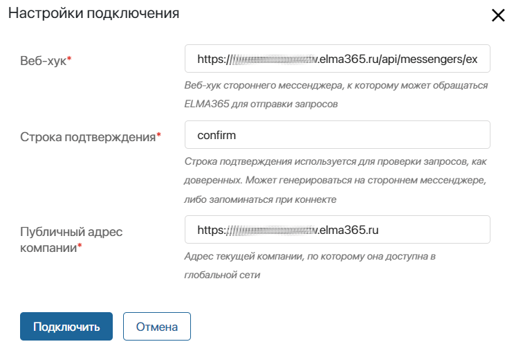

An arbitrary messenger is a custom communication application created specifically for your company and used by your employees. Such messengers can be integrated with a live chat. After that users can communicate with you using a familiar messenger, while operators reply to them directly in BRIX. The full chat history is saved in the Live Chats workspace.
When receiving a message from an arbitrary messenger user, a new session will be created in the Live Chats workspace or an existing session will be opened. The operator will be able to process the request by replying to it from the Live Chats workspace. The user will receive a response in an arbitrary messenger.
The operator will be able to create a new session with the user if it is enabled in the arbitrary messenger.
начало внимание
Only users included in the Administrators group can create live chats and set up an integration with an arbitrary messenger.
конец внимание
Several messengers can be connected to the same live chat. However, one messenger account can be connected only to one live chat.
To connect an arbitrary messenger to a live chat:
- Go to Administration > Live Chats.
- Select a live chat from the list or create a new one by clicking +Live Chat in the upper right corner.
- Switch to the Messengers tab and click the button.
- In the window that opens, enter the name of the channel, for example, Support service. Click Connect.
- Fill out the form:

- Webhook*. Go to the custom messenger’s settings, copy the webhook, and enter it in this field. It is used to send requests from BRIX.
- Confirmation code*. Specify the confirmation code that is used to check whether a request comes from a trusted source. The code is set in the messenger settings in any format you prefer.
- Company’s public URL*. In this field, the full address of your BRIX company is automatically added.
- Click Connect.
- If needed, configure the settings on the side of the arbitrary messenger to complete the integration.
After verification, the messenger account will be connected to the live chat.

To disconnect a live chat from an arbitrary messenger, click the button next to the chat name. Its status will change from Active to Disconnected. You can reconnect the messenger to the live chat by clicking this button once again.
If necessary, you can change the channel name by clicking the pencil icon or delete it by clicking the recycle bin icon.
If the connection is interrupted, go to Administration > Live Chats and reconnect. Please note that messages sent to the messenger while the connection was interrupted will not appear in the live chat.
Found a typo? Select it and press Ctrl+Enter to send us feedback